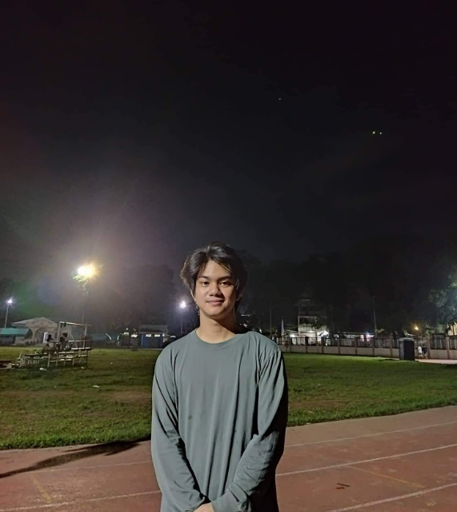

A complete training system — from awareness to certification — helping every Philippine teacher support every learner.
A structured 3-phase path — from awareness to certified inclusive teacher.
Before you train, understand the learners. Read the disability awareness guide for your chosen topic — visual, hearing, autism, physical, psychosocial, and more.
~5 min readEnroll in a seminar. Complete all structured learning modules, training activities, and instructional videos at your own pace.
4–6 hours per seminarAfter completing all modules, take the final quiz. Score 60% or higher to unlock your downloadable certificate of completion.
Score 60%+ to pass"The Braille seminar gave me real, practical steps I could use in my classroom the very next day. The awareness guide first really helped me understand my student better."
"I finally understand how to support my deaf student. The FSL module was clear, easy to follow, and I passed the quiz on my first try. Highly recommend!"
"The step-by-step classroom guides are exactly what I needed. No fluff — just what to do before class, during teaching, and during assessment. Very practical."
"I enrolled in three seminars already. The ASD strategies module completely changed how I approach my student with autism. The certificate is a great bonus."
Each track has its own awareness guide, seminar, modules, and certificate.
Braille reading, writing, and accessible classroom materials
Filipino Sign Language fundamentals for deaf learners
Evidence-based strategies for students with ASD
Accessible classroom design and Universal Design for Learning
Mental health support and trauma-informed teaching
Balancing academics with health management support
Differentiated instruction and life skills teaching
Ready to start your inclusive education journey?
Before you train, understand the learners. Explore each disability type and learn how it affects students in the classroom.
Click any card to read the full awareness guide
Enroll in any seminar to unlock modules, videos, activities, and quizzes.
This Seminars page provides step-by-step training, classroom preparation strategies, and real-life teaching scenarios. It helps teachers handle inclusive classrooms with students who have visual, hearing, physical, psychosocial, and developmental disabilities. Each seminar includes structured modules, guided activities, instructional videos, and a certification quiz.
Clear steps from identifying needs to assessing learning
Safe layouts, accessible materials, seating, and peer support
Example: 50 students, 2 deaf, 1 blind — see how teachers handle it
Pass the quiz with 60%+ to earn your certificate of completion
Select a disability type below to read the step-by-step teaching guide and real classroom scenario for that learner.
This system includes structured, step-by-step teaching guides that provide clear and practical instructions for teachers in handling inclusive classrooms. These guides focus on what teachers should do before, during, and after class when teaching students with different types of disabilities.
For example, in teaching students with visual impairment (blind learners), teachers are guided as follows:
Step 1: Classroom Preparation — Ensure the classroom is safe and free from obstacles. Assign appropriate seating near the teacher. Prepare audio-based or accessible learning materials.
Step 2: Lesson Delivery — Read aloud all written content on the board. Clearly describe visual materials such as images, charts, or diagrams. Use verbal explanations consistently throughout the lesson.
Step 3: Student Interaction — Address the student by name before speaking. Provide clear and direct verbal instructions. Check for understanding through oral responses.
Step 4: Learning Activities — Provide alternative activities such as audio tasks or guided assistance. Allow the use of assistive tools when necessary.
Step 5: Assessment — Conduct oral examinations instead of written tests. Accept audio-recorded responses as outputs.
Real Classroom Scenario
Scenario: A classroom of 50 students, including 2 students with hearing impairment and 1 student with visual impairment.
Guided Teaching Approach: The teacher begins the lesson by combining verbal explanation and visual presentation. All written content on the board is read aloud to support the blind student. Key points are written clearly to assist deaf students. Peer support is encouraged by assigning classmates to assist students with special needs.
Assessment Approach: Deaf students are given written or visual-based tasks. Blind students are assessed through oral or audio responses.
5 steps · Before Class → Assessment
4 steps · Before Class → Assessment
5 steps · Before Class → Assessment
5 steps · Before Class → Assessment
5 steps · Before Class → Support
5 steps · Before Class → Assessment
5 steps · Before Class → Assessment
Choose any seminar below to start your training journey.
Track your progress, access enrolled seminars, and download your certificates.
School Name
Enrolled
Completed
Certificates
Quiz Passed
Join thousands of teachers on their inclusive education journey.
A free online platform providing structured teacher training for inclusive education nationwide.
Inclusive education is mandated nationwide. Yet many teachers lack training to effectively support learners with disabilities. IncluEd bridges this gap with free, structured, and impactful training.
To develop and deliver a comprehensive online teacher training system that prepares educators for inclusive classrooms through structured awareness, guided modules, interactive activities, and validated certification.
Covers Braille, Filipino Sign Language, Autism, Physical Disability, Psychosocial, Chronic Illness, and Intellectual Disability training tracks with modules, videos, quizzes, and certification.
This system focuses on online-only training. It does not replace face-to-face workshops, medical diagnosis, or therapeutic interventions.
Gain confidence and skills to support all learners
Receive equal educational opportunities
Build institutional capacity for inclusion
Promotes an inclusive, equitable society
Designer
Responsible for building and maintaining the system features, database, and website functions to ensure the platform works smoothly and efficiently.
Research
Responsible for gathering information, studying inclusive education practices, and ensuring the content and training materials are accurate and helpful for teachers.

Designer
Responsible for creating the website layout, visuals, colors, and user-friendly interface to make the system attractive and easy to use.
Support
Responsible for assisting users, answering concerns, and helping teachers or visitors with technical and system-related problems.
Questions? We're here to help.
Whether you have questions about our training programs, need technical support, or want to give feedback — we'd love to hear from you.
DepEd Complex, Meralco Avenue
Pasig City, Philippines
support@inclued.edu.ph
(02) 8632-1361
Follow us for updates, tips, and inclusive education news.